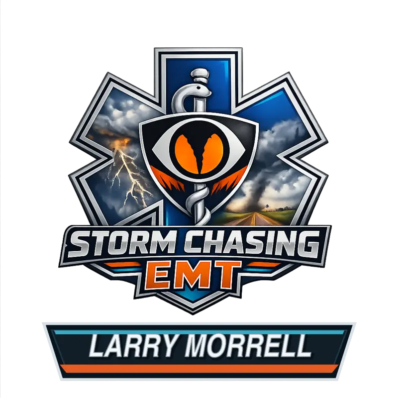
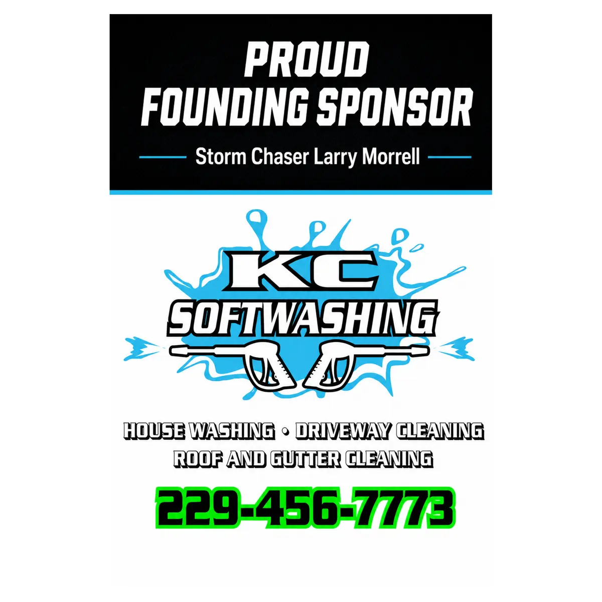

Field Coverage
Live, safety-dependent coverage and ground-level observations when conditions allow.

Storm ChaserLarry MorrellSouth Georgia, North Florida & Southeast Alabama severe weather coverage
Responsible field coverage, live weather overviews and community-focused severe weather information from Storm Chaser Larry Morrell.
Serving South Georgia, North Florida & Southeast Alabama
Who I am
I’m Larry Morrell, a South Georgia storm chaser and Advanced EMT with more than 26 years of severe-weather spotting and observation experience.
My goal is to provide responsible field coverage across South Georgia, North Florida and Southeast Alabama, along with clear, community-focused information before, during and after severe weather—whether I am safely in the field or providing a weather overview from home.
Learn more about Larry, the mission and the coverage →The coverage
Live, safety-dependent coverage and ground-level observations when conditions allow.
Ongoing severe-weather context and coverage even when chasing is not practical or safe.
Regional information for South Georgia, North Florida and Southeast Alabama, local awareness and responsible sponsor recognition.
Primary coverage focus
The map covers South Georgia, North Florida and Southeast Alabama, including the expanded Georgia area south of Bibb County from the Alabama line east to Chatham County. Use the year selector to view counties Larry actively chased in during 2026 or 2025. Field response always depends on the weather setup, travel conditions, safety, timing and available resources.
State and county boundaries provide geographic context—not a guaranteed field-response boundary.Backed by community
Organizations helping support responsible severe-weather coverage across South Georgia, North Florida and Southeast Alabama.

Partner with the coverage
Community partnership and sponsorship opportunities are available for businesses that want dependable monthly recognition alongside weather-driven coverage.
✓ Agreed monthly placements continue regardless of storm activity. Storms, reach, views, customers and sales are never guaranteed.
stormchaserlarrymorrell@gmail.com